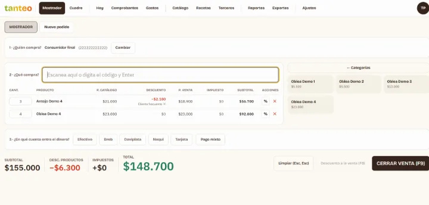
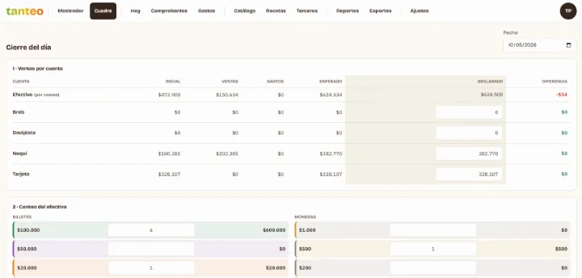
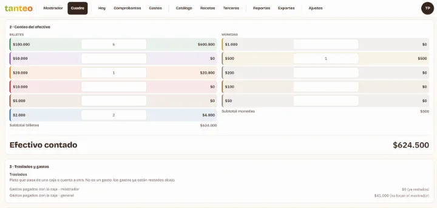
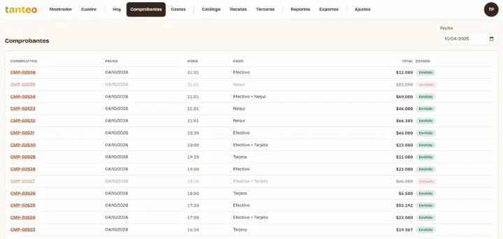
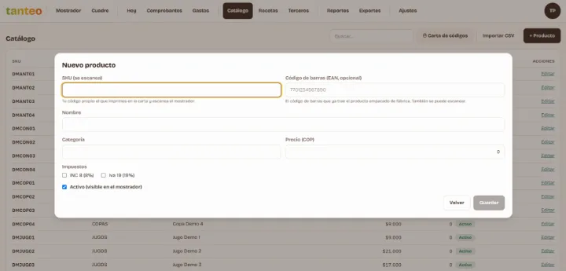
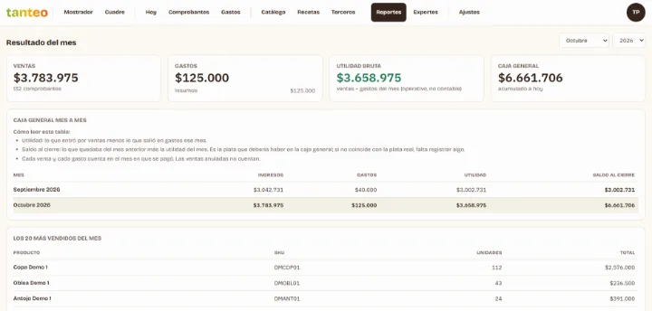
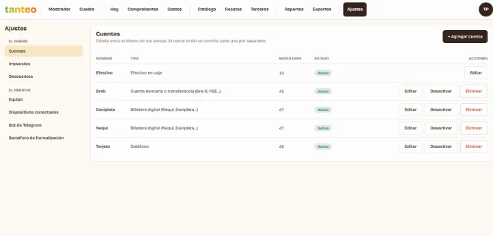
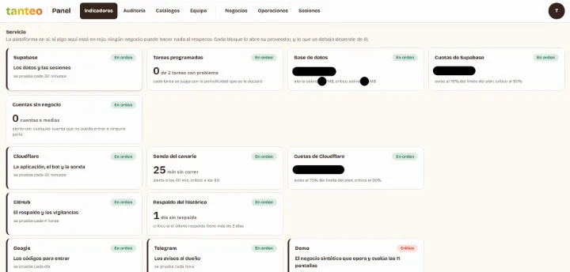

Tanteo
Ventas, caja y gastos para micronegocios que todavía no están obligados a facturar electrónicamente.
Registra cada venta en el mostrador con un comprobante interno, cierra la caja del día con arqueo, registra los gastos leyendo el código QR de las facturas electrónicas de los proveedores y avisa cuándo el negocio se acerca al umbral que lo obligaría a facturar.
- Estado
- En producción · negocio piloto
- Periodo
- Ago 2026 – presente
- Rol
- Proyecto independiente, hecho para negocios de amigos
Qué es
Tanteo reemplaza la hoja de cálculo de un negocio de barrio (una tienda, una cafetería, un pequeño comercio) cuyo dueño es una persona que todavía no tiene que facturar electrónicamente.
- El mostrador vende con un lector de código de barras y emite un comprobante interno de venta, que no es factura.
- Cada noche se cierra la caja.
- Los gastos entran leyendo el código QR de la factura del proveedor.
- El dueño ve el resultado del mes y su contador descarga lo que necesita.
- Una misma plataforma atiende a varios negocios, cada uno con sus datos aislados.
Quién lo usa y qué ve cada uno
- Propietario: ve todo su negocio. Es el único que anula comprobantes, reabre un día cerrado, corrige o anula gastos, edita el catálogo, invita a su equipo y vincula el bot.
- Cajero: vende, abre y cierra la caja y registra clientes. Solo ve los comprobantes y gastos del día, y no anula ni reabre.
- Contador: solo lectura de comprobantes, gastos, reportes y exportes, de cualquier fecha.
- Cliente final: no necesita cuenta; se registra con un QR impreso en el mostrador y recibe su comprobante impreso o por correo.
- Equipo de la plataforma: no ve los datos de un negocio real, solo su identidad y su estado, nunca montos, clientes ni ventas. Solo puede entrar a negocios de prueba, y cada consulta queda auditada.
Qué registra
- Comprobante de venta: consecutivo sin huecos, cajero, cliente (por defecto, consumidor final), líneas, impuestos, descuentos y uno o varios pagos. Precios e impuestos se congelan al vender. Estados: emitido → anulado, solo por el propietario, con motivo y con el día abierto. Nunca se borra.
- Cierre del día: saldo inicial por cuenta, conteo del efectivo billete por billete, traslados a la caja general, retiros, esperado frente a contado y la diferencia. Estados: abierto → cerrado; solo el propietario lo reabre, con motivo.
- Gasto: proveedor, fecha, de qué cuenta salió el dinero, categoría (insumos, fijos, servicios, nómina u otros) e impuestos. Se corrige o se anula solo con el día abierto.
- Catálogo: productos con código de barras, impuestos y descuentos (porcentaje, monto, libre o «lleva X, paga Y»), promociones automáticas por días o fechas, e insumos y recetas: cada venta descuenta el inventario.
- Clientes y proveedores: identificación validada, contacto y consentimiento de datos. Suprimir a alguien lo anonimiza.
Cómo funciona
Venta en el mostrador
Se elige el cliente, se escanean los productos (o se usan botones rápidos), se aplican los descuentos y se cobra en una cuenta o con un pago mixto, con calculadora de cambio. El servidor toma precios e impuestos del catálogo, no de la pantalla, así que nadie los altera. Los pedidos abiertos permiten llevar varias ventas a la vez para clientes que siguen en el local.
Sin conexión
Cada venta se guarda primero en el equipo y se envía en orden cuando vuelve la red, sin duplicarse; el cierre del día espera a que todo suba.
Cierre del día
Abrir la caja, revisar ventas por cuenta, contar el efectivo, registrar traslados y gastos, y cerrar. Con el día cerrado no entran ventas, gastos ni anulaciones.
Gastos
Se escanea el QR de la factura electrónica del proveedor, se sube su archivo o se escribe a mano. El proveedor se crea solo si no existe, y una factura ya registrada se rechaza.
Catálogo
Se edita en pantalla o se importa de una hoja de cálculo en una sola operación, que se cancela completa si algo falla. Imprime una carta de códigos de barras.
Registro de clientes
Por QR, con protección anti-bots. La respuesta es la misma si la persona ya estaba registrada, para no revelar quién es cliente.
Equipo
El propietario invita con un enlace válido para un solo correo.
Resultados
El resultado del mes (ventas, gastos y utilidad operativa), la caja general y los productos más vendidos; exportes para el software contable del contador; y un semáforo de formalización que avisa cuando los ingresos del año se acercan al umbral que obliga a facturar electrónicamente.
Pantallas
- Del negocio: Hoy (ventas del día y pendientes de la semana); Mostrador; Cierre del día; Comprobantes; Gastos; Catálogo, con carta de códigos; Insumos y recetas; Clientes y proveedores, con el QR de registro; Resultado del mes; Exportes; y Ajustes (cuentas, impuestos, descuentos, equipo, dispositivos, bot y semáforo).
- Pública: el formulario de registro de clientes, con la marca del negocio.
- De la plataforma: indicadores, auditoría, catálogos, equipo, negocios, operaciones y sesiones.
Operación: bot y avisos
| Disparador | Mensaje | Quién lo recibe | Para qué |
|---|---|---|---|
| /hoy, /cuadre, /existencias | Ventas del día frente a la semana anterior, resultado del último cierre, insumos bajo el mínimo | Dueño, en su chat vinculado | Seguir el negocio desde el teléfono |
| Cierre de cada noche | Ventas, resultado del cuadre y pendientes de la semana | Cada dueño | Saber cómo cerró el día |
| Sonda del canario | Si falla, alerta con qué se perdió y qué hacer | Chat de operaciones | Atender antes de que el cliente lo note |
| Alerta por prioridad | Servicio, fuente, qué hacer y si la causa es del proveedor | Chat de operaciones; las críticas también por correo y se repiten hasta resolverse | Priorizar |
| /salud, /estado, /sonda, /playbook | Estado de la plataforma y guía por fuente de alerta | Chat de operaciones | Diagnosticar sin entrar al panel |
- El bot se vincula con un código de un solo uso que genera el propietario.
- Sonda del canario: entra como cajero en un negocio de prueba, vende por el mismo camino del mostrador y relee la venta con esa sesión; si una regla de acceso se rompe, la sonda lo ve.
- Negocio de demostración: opera a diario como uno real y cierra el día cuadrado.
- Respaldo diario cifrado y un vigilante externo, fuera de la plataforma, que también comprueba el correo.
Controles
- Aislamiento entre negocios: cada regla vive en la base de datos; las claves impiden que un registro apunte a otro negocio; las operaciones de dinero solo entran por funciones del servidor; y las pruebas comprueban que el dueño de otro negocio ve cero filas ajenas.
- La plataforma no ve un negocio real: ninguna regla le da acceso, el panel recibe el documento enmascarado y las métricas son conteos, sin montos.
- Mínimo privilegio: la sonda y la demo usan sesiones reales de cajero o propietario, no la llave maestra.
- Integridad: comprobantes inmutables y sin huecos, datos congelados al vender, ninguna venta ni gasto se duplica, y el día cerrado no se toca sin una reapertura auditada.
- Auditoría: cada acción relevante queda registrada; la ven el propietario, el contador y la plataforma.
- Datos personales: consentimiento obligatorio, del dueño al crear el negocio y del cliente al registrarse; supresión con anonimización.
- Control de cambios: las mismas verificaciones en cada commit, en cada push y en la integración continua; revisión de dependencias y de secretos; la matriz de acceso como condición innegociable; y una prueba de humo después de cada despliegue.
Integraciones
- Supabase: base de datos, ingreso con código y funciones.
- Cloudflare: sitio, worker del bot y las sondas, respaldos cifrados y anti-bots.
- Telegram: el bot.
- Correo: códigos y alertas críticas.
- GitHub Actions: controles, vigilante, respaldo y demo.
- Software contable: solo exportación de archivos.
Capturas de pantalla
Toca una imagen para verla completa.

Mostrador: cliente, productos escaneados, descuentos y la cuenta donde entra el dinero. 
Cierre del día: lo esperado frente a lo declarado en cada cuenta, con la diferencia. 
Conteo del efectivo billete por billete, traslados y gastos. 
Comprobantes del día, con los anulados tachados. 
Catálogo: alta de un producto con su código, precio e impuestos. 
Resultado del mes: ventas, gastos, utilidad, caja general y los más vendidos. 
Ajustes: las cuentas donde entra el dinero de las ventas. 
Panel de la plataforma: el estado de cada servicio, la sonda del canario y el negocio de demostración.


Diagrama de infraestructura
Diagrama interactivo generado a partir del código del proyecto. Toca un nodo para ver su detalle y sus conexiones.
Detalles técnicos
Stack
- PWA en React 18 + TypeScript
- Vite
- Tailwind CSS
- IndexedDB
- Supabase (PostgreSQL, pg_cron)
- pgTAP
- Cloudflare Workers, Pages y R2
- Vitest
- Playwright
- GitHub Actions
Cifras
- 39 tablas, todas con políticas de acceso (52 políticas); 111 funciones, 13 vistas y 34 triggers; 3 Edge Functions.
- 679 aserciones de pruebas de acceso, unas 396 pruebas unitarias y 66 de extremo a extremo; 23 reglas en el control de cambios; 150 parches SQL aplicados.
Detalles de operación
- Resumen del dueño: a las 21:00, hora de Colombia.
- Canario: cada 5 minutos de 06:00 a 21:55 y cada 30 minutos de madrugada.
- Alertas: las críticas se repiten cada hora; las demás, cada 24 horas.
- Respaldo: a las 03:00, con los últimos 90 conservados.
- Vigilante: cada hora.
- Tareas de la base: 06:00 y 06:30.
- Invitación: válida 7 días.
- Código del bot: 6 dígitos, 10 minutos y 5 intentos.
- Importación: hasta 2000 filas.
- Ventas sin conexión: se aceptan hasta 7 días atrás.
- Semáforo: umbral legal de ingresos (3500 UVT en Colombia), con aviso al 70 % y al 90 %.
Cómo construyo: defino el problema, los requisitos, el modelo de datos y los controles; implemento con asistentes de IA (Claude Code) bajo mi dirección, y cada cambio pasa pruebas automáticas y mi revisión antes de publicarse.
El código es privado porque contiene reglas de negocio y datos del cliente. Puedo recorrerlo en vivo: código, pruebas y despliegue.